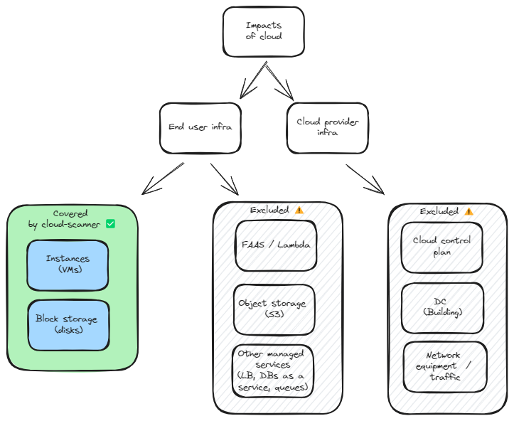

Introduction
This short presentation aims at explaining the why behind the creation of Boavizta cloud-scanner.
This project started out of a Boavizta hackathon, initially as a way to demonstrate that we could make good use of Boavizta Open data and Open methodology to help assess environmental impacts of public cloud usage.
Cloud scanner evolved as a open source project, part of the Boavizta ecosystem. It offers a way to address some of the challenges we identified with de default environmental reporting of most public cloud providers.
We will first explain why we are not satisfied with the status-quo, then explain the Boavizta/cloud-scanner approach.
We will also highlight the limits of our approach and the roadmap of future cloud-scanner.
This presentation addresses the why. But if your are more interested by the how feel free to jump directly into cloud-scanner documentation.
What we need
To assess environmental impacts of public cloud resources, we need:
A global view of the environmental cost
- Aggregated impact data
- Use phase + manufacture phase
- Multiple criteria (GWP, ADP...)
Real time monitoring
- greenops approach
- notification / alerting
- trigger other processes
Challenge alternative architectures
- Need to simulate variant of cloud architectures
Challenges with cloud providers
We face several challenges with the default environmental reporting of public cloud providers.
A lack of transparency
- Questionnable methodology (not transparent / not documented)
- Scope (1 and 2 only ?)
- Decried Market-based approach 💣
A granularity problem
- in time (3 months delay)
- in service (hard to break down by app or micro service)
No easy integration
- difficult to reuse data
- e.g. AWS dashboard
Our approach
Automated inventory
- Scan of the cloud account
- Easy to deploy
Modeling
Taking into account the hardware:
- CPU type, RAM size and CPU load
- Storage size
- Region of consumption (electrical mix)
- PUE
Transparent
- Open and public methodology (peer reviewed)
- Open data set of impacts
- Boavizta cloud scanner is open source
Key features
Real time
- 5 minutes sampling period
- Dashboard
- Historisation
Precise attribution
- Filter / aggregate by type of resource, region, name (or any other tag)
- Attribute to specific service in the account

Key features
Integration
- Produces standard metrics (OpenMetrics / Prometheus)
- Can be used as REST API or CLI
- Exporting capabilities (files)
- json inventory
- json impacts
Secure
- Deployed inside the cloud account
- Using cloud policies to filter resources
Simulation
- Capacity to inject a cloud inventory
- => Simulate impacts of future infra before deployment
Limits
Does not cover all aspects
Instances and block storage only
- Missing object storage (S3), serverless (lambda) or DB as a service
- Not the entire scope (control plan, network and cloud provider infra not accounted)
=> underestimate !

Lack fine grain attribution for Kubernetes
Does not offer fine grain attribution in case of container orchestration (i.e. does not go down to the container or micro service level).
- See work of SBS
Roadmap and future work
Cover more services
A first objective is to increase the scope of the services.
- Object storage / S3
- FAAS / Serverless (like AWS lambda or Azure functions)
- Additional managed services (like DB as a service)
- Impacts of GPUs, which is key to assess AI/ML workload
For each new service, this will likely be a 2 step process:
- Define a common model (identify key drivers of the impacts) and implement this model in Boavizta API.
- Automate collection of related data in cloud scanner.
Expand to other cloud providers
- Azure (work in progress)
- Scaleway (work in progress)
- OVH
- ...
Provide recommendations
Estimating environmental impacts only makes sense if we can use it to avoid unnecessary impacts.
In the future cloud-scanner may provide insights on what is wasted and where to apply efforts of reduction.
Frequently asked questions
Isn't the reporting offered by cloud provider sufficient ?
For several reasons (scope, transparency, granularity), we consider that today's reporting of major public cloud provider does not fully answers to our needs. See Challenges and What we need.
A comparison of what is reported by default is addressed with more detail in this Boavizta article: Understanding the results of cloud providers' carbon calculators | Boavizta.
You may also refer to the academic paper that describes the Boavizta cloud methodology: BoaviztAPI: a bottom-up model to assess the environmental impacts of cloud services.
References
Boavizta
- Digital environmental impact evaluation for organizations
- Understanding the results of cloud providers' carbon calculators | Boavizta
Repositories / tools
- A front end that you can use to get a fist view of Boavizta API Datavizta
- The Boavizta data GitHub - Boavizta/boaviztapi: 🛠 Giving access to BOAVIZTA reference data and methodologies trough a RESTful API
- GitHub - Boavizta/cloud-scanner
- Cloud-scanner documentation
Methodology
- The paper presented at HotCarbon San Diego: BoaviztAPI: a bottom-up model to assess the environmental impacts of cloud services
Other projects that we find interesting
Some of these projects directly contributed to our work or are inspirations for the future development of cloud-scanner. Thank you !
- The seminal work of Benjamin Davy: Building an AWS EC2 Carbon Emissions Dataset
- Carbon footprint estimator for AWS instances - Teads
- Cloud Carbon Footprint - An open source tool to measure and analyze cloud carbon emissions
- Carbonifier.io to help estimate the impacts using Infra as code, prior deployment Carbonifer.io.
- OpenCost — open source cost monitoring for cloud native environments | OpenCost — open source cost monitoring for cloud native environments
Contributing
Evaluating the environmental impacts of public cloud resources is a work in progress. And we know that this this project is only a first step towards a better use of the resources.
We are convinced that this long term goal involves a multidisciplinary approach and open discussions. Boavizta projects are open source, and only possible because we share our struggles or progress and ideas.
Reach out
We are eager hearing from you !
Try cloud scanner, and if you have any question or feedback, please open a issue or a discussion on Github, or just reach out on Boavizta public chat.
And if you like this project, please star it ⭐ on Github or add your name to the adopters file 💙.
Thank you !
Any question ?